바로가기 만들기 ⇧
1. 크롬 주소 창에 maljib.org?1을 넣고 Enter를 누릅니다. 2. 주소 창 오른쪽 끝 세 점 누르개를 누릅니다.3. 도구 더보기 - 바로가기 만들기... - [만들기]를 누릅니다.
(손전화에서는 홈 화면에 추가 - 추가 - 추가를 누릅니다.)
도움말 보기 ⇧
'말다듬기' 큰 글씨를 누릅니다. 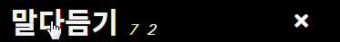찾기 ⇧
1. '찾기' 그림을 누릅니다. 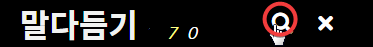 2. 찾기 물음을 넣고 찾은 말에서 고르거나, Enter를 누릅니다. 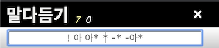찾기 물음
| 아 | ‘아’가 들어 있는 말 |
| 아* | ‘아’부터 가나다순 |
| * | 처음부터 가나다순 |
| -* | 끝부터 가나다 역순 |
| -아* | '아'부터 가나다 역순 |
| ! | 새로 넣었거나 고친 말부터 |
| @ | 내가 넣은 말 |
| -@ | 내가 처음 넣은 말부터 |
| 아@ | 내가 넣은 말 ‘아’부터 가나다순 |
| -아@ | 내가 넣은 말 ‘아’부터 가나다 역순 |
| @ㅇㅇ | ㅇㅇ님이 넣은 말 |
| -@ㅇㅇ | ㅇㅇ님이 처음 넣은 말부터 |
| 아@ㅇㅇ | ㅇㅇ님이 넣은 말 ‘아’부터 가나다순 |
| -아@ㅇㅇ | ㅇㅇ님이 넣은 말 ‘아’부터 가나다 역순 |
| $ | 내가 적바림 쓴 말 |
| $ㅇㅇ | ㅇㅇ님이 적바림 쓴 말 |
뒤집어 보기 ⇧
뒤집어 볼 말을 누릅니다. 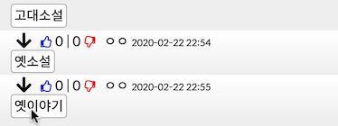 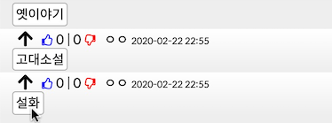 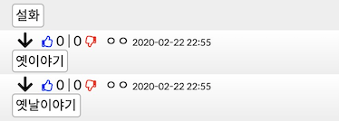다듬은말 묻기 ⇧
1. 찾기에서 다듬을 말을 넣고 Enter 글쇠를 누릅니다. 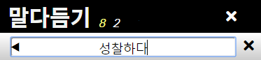 2. 다듬은말이 없습니다. '갈무리' 그림을 눌러서 묻습니다. 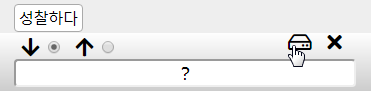 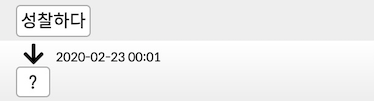배달말집으로 나가기 ⇧
'나가기' 그림을 누릅니다. (배달말집으로 나가서 로그인하고 다시 들어오면 아래 일들을 할 수 있습니다.)
(배달말집으로 나가서 로그인하고 다시 들어오면 아래 일들을 할 수 있습니다.)들어오기 ⇧
'말다듬기' 그림을 누릅니다. 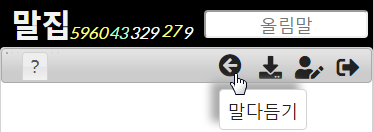넣기 ⇧
1. 다듬을 말을 넣고 Enter 글쇠를 누릅니다. 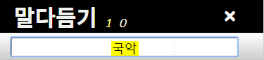 2. 다듬은말을 넣고 '갈무리' 그림을 누릅니다. 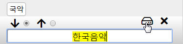다듬은말 더 넣기 ⇧
1. '더 넣기' 그림을 누릅니다. 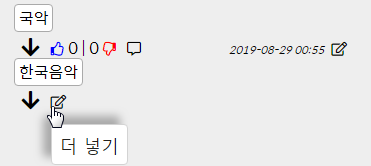 2. 다듬은말을 더 넣고 '갈무리' 그림을 누릅니다. 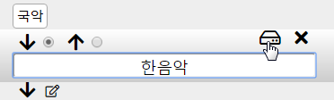적바림 쓰기 ⇧
1. '적바림 쓰기' 그림을 누릅니다. 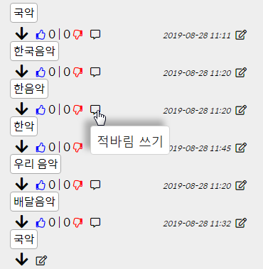 2. 적바림을 써넣고 '갈무리' 그림을 누릅니다. 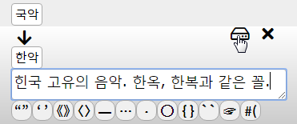 12◯ ㄱ◯ 가◯ {한복}을 --> ⑫ ㉠ ㉮ 한복을`고유`의 `한복, 한옥`과 --> 고유의 한복, 한옥과
☞가` ☞나. ☞가, 나, 다. --> ☞가 ☞나. ☞가, 나, 다.
#(https://maljib.org | 배달말집) --> 배달말집
#(https://maljib.org) --> https://maljib.org
(밑줄 친 곳을 누르면 그곳으로 찾아갑니다.)